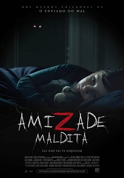
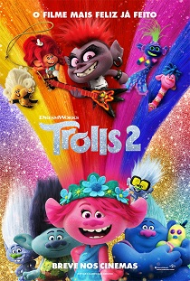

Programações.
Programação do Cine Santa Clara - Ilhéus.
Programação do Cinemark - Itabuna.
Válido do dia: 26/12/2020, quinta-feira, até: 30/12/2020, quarta-feira.
Programação do Cine Santa Clara - Ilhéus.
Programação do Cinemark - Itabuna.
Válido do dia: 26/12/2020, quinta-feira, até: 30/12/2020, quarta-feira.
 |
Mulher-maravilha 1984. |
|  |
Amizade Maldita. |
|  |
Trolls 2. |

;Avançando para a década de 1980, a próxima aventura da Mulher-Maravilha nos cinemas a coloca frente a dois novos inimigos: Max Lord e Mulher-Leopardo.
Com a diretora Patty Jenkins de volta ao comando e Gal Gadot no papel-título, Mulher-Maravilha 1984, da Warner Bros. Pictures, é a sequência da estreia da super-heroína da DC como protagonista nas telas de cinema com o filme “Mulher-Maravilha”, que em 2017 quebrou recordes e arrecadou US$ 822 milhões nas bilheterias mundiais. O filme também tem em seu elenco Chris Pine como Steve Trevor, Kristen Wiig como Mulher-Leopardo, Pedro Pascal como Max Lord, Robin Wright como Antíope e Connie Nielsen como Hipólita.
Charles Roven, Deborah Snyder, Zack Snyder, Patty Jenkins, Gal Gadot e Stephen Jones produzem o filme. Rebecca Steel Roven Oakley, Richard Suckle, Marianne Jenkins, Geoff Johns, Walter Hamada, Chantal Nong Vo e Wesley Coller são os produtores-executivos.
Patty Jenkins dirigiu a partir de um roteiro que ela escreveu com Geoff Johns & David Callaham, uma história de Jenkins & Johns, baseada nos personagens da DC. Juntando-se à diretora nos bastidores estão vários membros de sua equipe de “Mulher-Maravilha”, incluindo o diretor de fotografia Matthew Jensen, a designer de produção indicada ao Oscar Aline Bonetto (“O Fabuloso Destino de Amélie Poulin”), e a figurinista ganhadora do Oscar Lindy Hemming (“Topsy-Turvy: O Espetáculo”). O editor indicado ao Oscar Richard Pearson (“Voo United 93”) está editando o filme. A música é do compositor ganhador do Oscar Hans Zimmer (“Dunkirk”, “O Rei Leão”).
A Warner Bros. Pictures apresenta uma produção da Atlas Entertainment/Stone Quarry, um filme de Patty Jenkins, Mulher-Maravilha 1984. Com estreia prevista para breve nos cinemas, o filme será distribuído mundialmente pela Warner Bros. Pictures.
Kevin (Sean Rogerson) e Beth (Keegan Connor Tracy) notam que seu filho de oito anos, Josh (Jett Klyne), tem passado bastante tempo brincando com um novo amigo imaginário, chamado Z. O que a princípio parece uma relação inofensiva, rapidamente se transforma em algo destrutivo e perigoso. É quando Beth começa a desvendar o seu próprio passado, que ela descobre que Z pode não estar apenas na imaginação do filho. Classificação Indicativa 14 anos. Contém : Violência, Drogas Lícitas, Linguagem Imprópria,;
Anna Kendrick e Justin Timberlake retornam muito bem acompanhados para a sequência do sucesso musical da DreamWorks Animation de 2016: Trolls 2. Em uma aventura que vai levá-los muito além do que eles conheciam, Poppy (Kendrick) e Tronco (Timberlake) descobrem que são apenas uma das seis tribos Trolls, espalhadas por seis países diferentes e dedicadas a seis tipos diferentes de música: Funk, Country, Techno, Clássica, Pop e Rock. O mundo deles está prestes a ficar muito maior e o volume, muito mais alto.
Um membro da realeza do hard rock, Rainha Barb (Rachel Bloom), auxiliada por seu pai, Rei Metal (Ozzy Osbourne), quer destruir todos os outros tipos de música para deixar o rock reinar sozinho. Com o destino do mundo em jogo, Poppy e Tronco, juntamente com seus amigos - Bitelo (James Corden), Chenille (As Gêmeas da Moda - Caroline Hjelt), Cetim (As Gêmeas da Moda - Aino Jawo), Cooper (Ron Funches) e Guy Diamante (Kunal Nayyar) - partem numa jornada para visitar todos os outros territórios, buscando unir os Trolls em harmonia contra Barb, que está tentando passar por cima deles.
Para representar as diferentes tribos musicais, o elenco reúne alguns dos maiores e mais aclamados talentos musicais escalados para um filme de animação. Da terra do Funk estão Mary J. Blige, George Clinton e Anderson .Paak. Representando o Country temos Kelly Clarkson como Delta D, Sam Rockwell como Hickory e Flula Borg como Dickory. J Balvin traz o Reggaeton, enquanto Ester Dean contribui para a tribo Pop. Anthony Ramos traz a batida do Techno e Jamie Dornan, o jazz suave. O maestro e violinista mundialmente renomado, Gustavo Dudamel, aparece como Trollzart e Charlyne Yi como Tina Flautina da terra do Clássico. Finalmente, Kenan Thompson faz rap como um Troll recém-nascido do hip-hop, chamado Tico Diamante.
Trolls 2 é dirigido por Walt Dohrn, que atuou como co-diretor de Trolls, e é produzido pela produtora Gina Shay. O filme é co-dirigido por David P. Smith e co-produzido por Kelly Cooney Cilella, que também trabalharam nos primeiro Trolls. Trolls 2 também contará com música original de Justin Timberlake, que foi indicado ao Oscar® pela música de Trolls, de 2016: “Can't Stop the Feeling!”. A trilha sonora é de Theodore Shapiro (Caça-Fantasmas (2016), O Diabo Veste Prada).